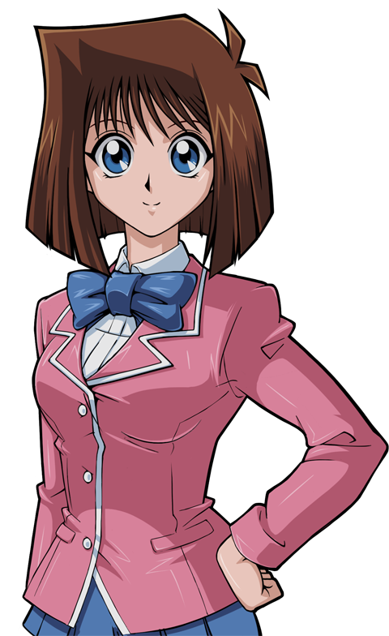

Arlind Besart
Alrind Besart is a fictional character created by Reace Ian Roeloffze.
He is a character based off of Dante from the Devil May Cry franchise. He shares many attributes with the legendary devil hunter which remain uniform across all universes he is roleplayed in, but depending on the universe he is roleplayed in his attributes are adjusted accordingly to adapt to and match each universe.
Background
Varies depending on Universe.Powers and Abilities
- Supernatural
- The Power Cosmic
- Demon Demigod
- Guns
- Swords/Melee weapos
Superhuman Strength
Superior Marksmanship
Keen Observation
Romances
- Tea Gardner
- Flora (Winx Club)
Tea Gardner
